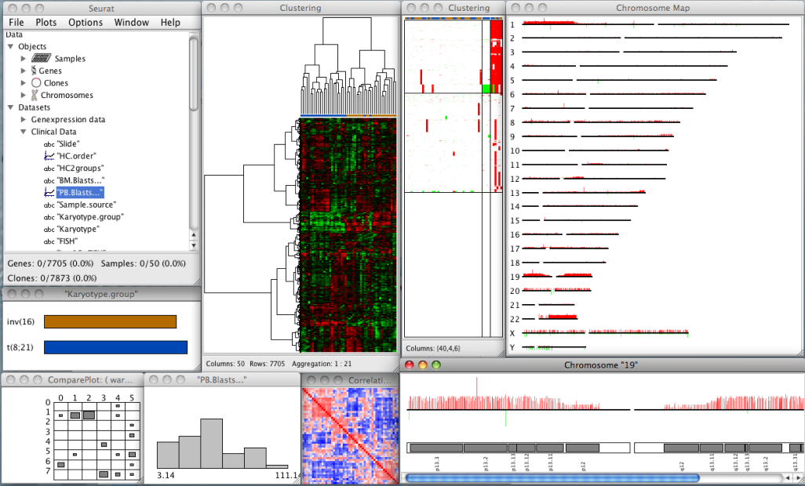

Seurat:
Visual analytics for the integrative analysis of microarray data
Seurat is a software which provides explorative analysis of high dimensional integrative data sets with the help of interactive graphics.
The software runs under Windows, MAC OS and Linux.
